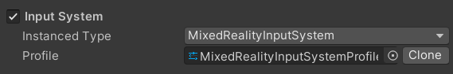
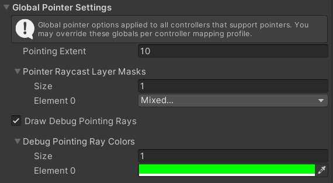
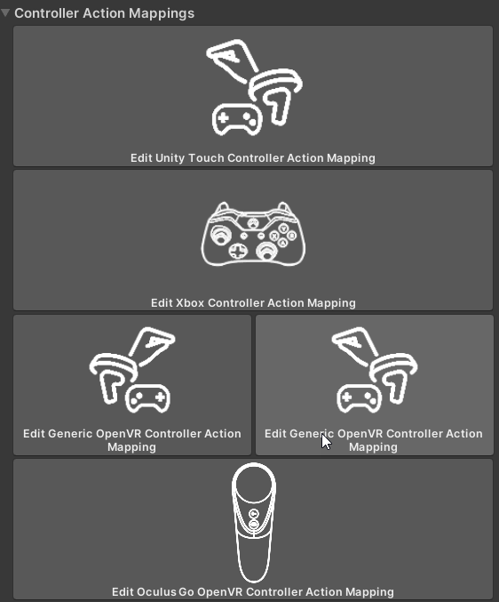
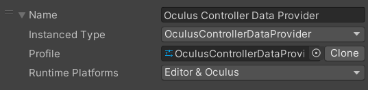
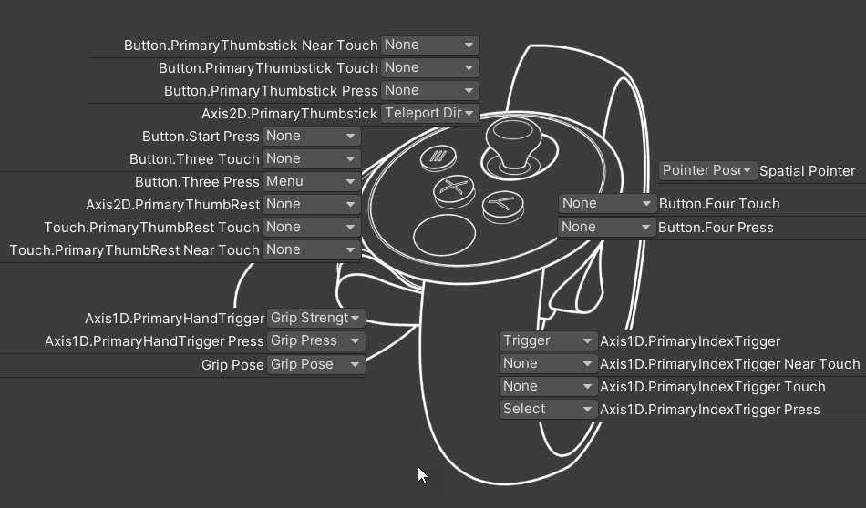

The Input System
The Input System may look daunting, however, it is easy to master once the principles for how the system works. In short, the Input System manages the flow of data from inputs such as controllers, headsets and more, then organizes all the data in to XRTK components for distributing through your project. This greatly reduces the complexity of dealing with cross-platform input from many sources.
In short, the only thing your project needs to handle are:
- What things can happen in your project (what we call Input Actions)
- And, what should happen then those things happen
For a shortcut to the activities you might want to configure in the Input System, check the Conclusion section below.
Mixed Reality Root configuration system
In the Root configuration, the specific implementation for the camera system is selected, which defaults to the XRTK implementation for the Input System. In most cases this does not need to be touched, however, advanced users can replace it with their own system if they wish.

Input System platform configuration
The core settings for the Input System allow the configuration of various elements which alter the behavior of the Input System, these include:
- Global Pointer Settings
- Global Hand Settings
- Input Actions
- Speech Commands
- Gestures
- Controller Actions
- Controller Definitions
These are all grouped together under a singe Input System profile for easy reuse between projects.

Global Pointer Settings
Pointers provide an invisible line between your controller (or head) in to a scene to interact with other objects. These default settings provide the global defaults for the Distance, Physics layer masks and colours users by the pointers, as well as whether they are drawn in the scene or not.

Global Hands Settings
Providing default settings that control both the rendering and physical nature of hands. This also holds the default pose configuration available to hands while in use in the environment.

Input Actions
Input Actions are a crucial element of cross-platform XR development. With the increasing number of controllers, inputs, buttons and sensors being made available to devices, it is not practical to keep adding more complexity within your Mixed Reality solution.
Input Actions solve this by simply defining logical actions or events that can happen in your solution, e.g. Grabbing, clicking, tapping, pulling, etc and using them within your project so that when that event is received, you can perform the action related to that action.
The list here simply defines what actions are available in your solution and the kind of data expected when that action occurs, e.g. A boolean for a button (on/off), a range from a trigger or a full 6dof movement.
See Controller Actions for how these Actions are then mapped to the various controllers you wish to support.

Controller Actions
With your actions defined for your project, the next logical step is to decide which inputs on which controllers would provide those actions. Through the XRTK's Input System, there are two ways to achieve this, the fist being the simpler Controller Actions list, which highlights all the currently known controllers that have been configured for your project. From here you can select each type of controller and which hand the controller is used in to assign what input does what.
You can also see the individual controllers view in the Controller Profile section below.

Controller Definitions
For a more detailed look at what controllers and inputs are configured, and to also add or remove controllers from your current configuration, the IMixedRealityInputDataProvider Configuration Options list out in detail what is currently available and for which platform they are available on.

Expanding a profile shows the details for each provider, including:
- Its name
- The concrete implementation for the controller provider
- The configuration profile for the controller provider
- The platforms the provider is registered for.

Check out all the Platforms that are available to configure.
From here you can either remove a controller profile completely, or change which platforms it is active for.
Be aware, the XRTK will do exactly as it is told in regards to the configuration applied, so if you have two competing controllers active for a specific platform at the same time, you will get multiple controllers in the scene, e.g. OpenVR and Oculus controllers.
Controller Data Profile configuration
Looking at the configuration for an individual Controller Profile will show you two views:
- Basic (default) - the same simple controller button view as Controller Actions showing only those specific to this provider.
- Advanced - More detailed views of the configuration behind the controllers.

Controller Profile
When you open a Controller Profile, you will get a nice graphical view of the controller and the inputs available for the device based on its hardware and the SDK of the vendor. Here you can chose from the list of Input Actions you have configured for the project, with each input filtering those Actions by what the Input on the controller can support, for example:
- Buttons can support only
Digitialactions (boolean), button down and button up. - Triggers support
Single Axisorfloatdata, giving a range, usually between 0 and 1 for how uch the input is pressed. - Touch pads and ThumbSticks support
Dual AxisorVector2data, giving two coordinates in the X and Y planes based on how the input is manipulated - We also allow assigning an action to the pose (6dof, position and rotation) of the controller, which relates to the controllers position and rotation in relation to the headset. An alternate pose is also available for grip, or offset position provided by the vendor for where the user grips the controller.
You may also see a mix of other options where the vendor provides more capabilities, such as Near and Touched events that will show up on those controllers, e.g. Oculus. Some inputs also have dual options, such as thumbsticks, which can also be pressed, allowing for an alternate action to be assigned.

Conclusion
There is a lot of configuration available in the Input System, most of which will not need to be touched, but here are some common tasks which can be achieved easily.
- Changing the list of actions specific to your project in the Input Actions configuration
- Altering the Input Action mappings for the registered controllers in Controller Actions
- Removing controllers that are not needed in Controller Definitions
Related Articles
Raise an Information Request
If there is anything not mentioned in this document or you simply want to know more, raise an RFI (Request for Information) request here.